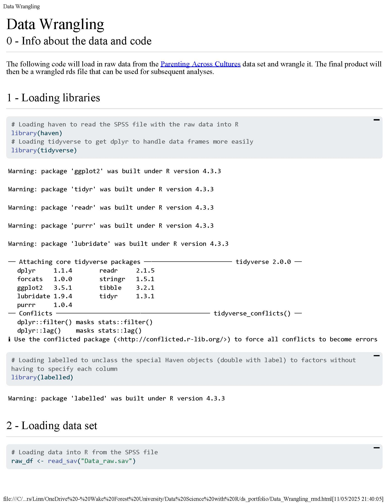

The following is an applied project I did where I did data wrangling for a data set called Parenting Across Cultures. I switched the data set that I am using for my thesis to this, so now I have to wrangle it and thought it would be a good opportunity to practice and develop my R skills.
This entire project was done in a private repository since I can’t share the data. I will therefore not have an .rmd file, but past the output. The output contains all of the code I have used, so it should display what I have done well.
I have tried to incorporate everything I have learned in R while working on this portfolio in this project. However, I didn’t work on the projects linearly, so there are also things from this project that has informed earlier projects. You can for example see that there is some mix between base R and tidyverse functions in this project, while some of the later projects has more consistent use of Tidyverse functions, since I had started understanding and liking it more by then. Also note the use of regex that was very useful and saved me from typing out a lot of column names manually. Also, I started this project testing out Quarto and decided I didn’t like it. This came from especially two reasons: 1) Quarto takes longer to render than rmarkdown and 2) there were some formatting issues with the visual editor that ended up creating invisible spaces and white spaces leading to weird output. I therefore gave back and went back to using Rmarkdown. There is however still some Quarto stuff lingering for this and the following project, so the output will look different because of that.
I tried attaching the html output
